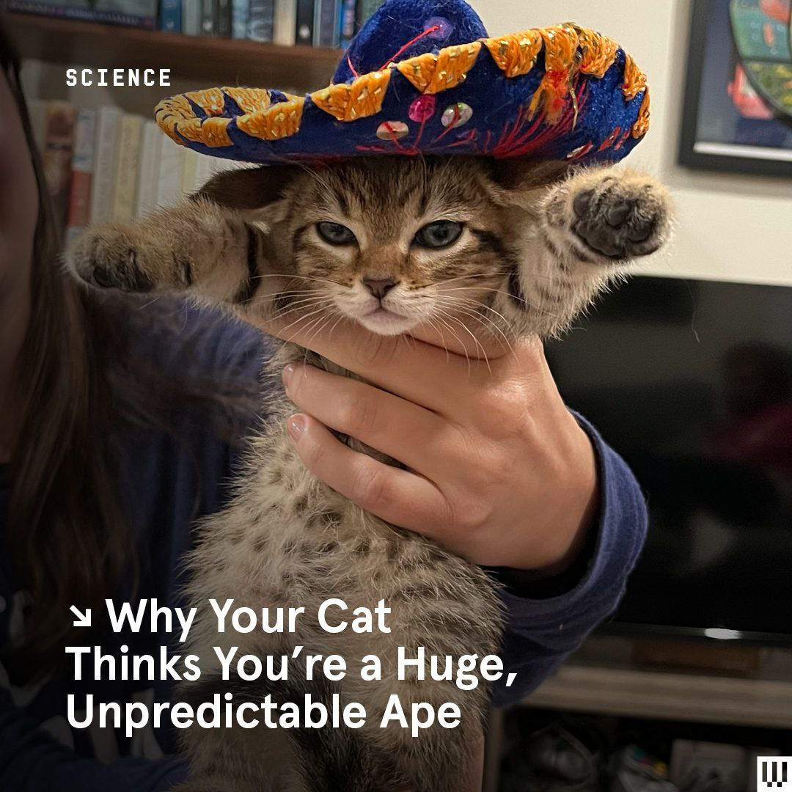

A continuación una foto que me gusta mucho:

Sobre mí:
Me llamo Sofía, nací en el 93 en la Ciudad de México, estudié biología, me gustan mucho los animales, patinar, viajar, hacer senderismo y estoy tratando de aprender alemán.
Mi mayor logro académico:
Para mí fue muy difícil titularme porque empecé a trabajar cuando llevaba una parte de la tesis escrita, todo el trabajo de campo hecho y poquitos análisis estadísticos terminados. Cuando llegaba del trabajo no tenía tiempo ni energía para continuar con mi escrito, por lo que, me tomó 3 años concluirlo, después de una pandemia, entrar a otro trabajo temporal y estudiar una especialidad.
Mis 6 bebidas favoritas:
- Rooibos Amor en Limón
- Licuado de mango
- Calpis
- Té chai
- Agua de horchata natural
- Negra Modelo
Mis Top 5 de canciones favoritas hoy 12 de abril de 2023:
- Unknown Mortal Orchestra - Can't Keep Checking My Phone
- Fania All-Stars - Quiero Saber
- Placebo - I do
- Mr Jukes - Magic
- Kylie Minogue - Come Into My World
Términos de JS y etiquetas HTML
- Función
- Se trata de un bloque de código reciclable e invocable, que puede recibir un dato y entrega un resultado.
- Let
- Se utiliza para declarar una variable a la que se le puede reasignar un valor y tiene un alcance de bloque.
- Const
- Se utiliza para declarar una variable cuyo valor será una constante y también tiene un alcance de bloque.
- Etiqueta <i>
- Se utiliza para poner letras en cursiva o itálicas.
- Etiqueta <small>
- Se utiliza para hacer un texto pequeño.
- Etiqueta <mark>
- Se utiliza para resaltar un texto.
Taxonomía incompleta de abejas Epifamilia - Anthophila
- Abejas Mineras - Familia Andrenidae
- Abejas mineras Típicas
- Tribu Andrenini
- Tribu Euherbstiini
- Subfamilia Oxaeinae
- Subfamilia Panurginae
- Abejas y Abejorros - Familia Apidae
- Abejas Recolectoras de Polen y Abejorros
- Abejas Parásitas
- Abejorros Carpinteros
- Tribu Allodapini
- Tribu Ceratinini
- Tribu Manuelini
- Abejas del Poliester - Familia Colletidae
- Abejas del Sudor - Familia Halictidae
- Abejas Cortadoras de Hojas y Abejas Albañil - Familia Megachilidae
- Subfamilia Fideliinae
- Subfamilia Lithurginae
- Subfamilia Megachilinae
- Tribu Anthidiini
- Tribu Dioxyini
- Tribu Megachilini
- Tribu Osmiini
- Abejas Colectoras de Aceites - Familia Melittidae